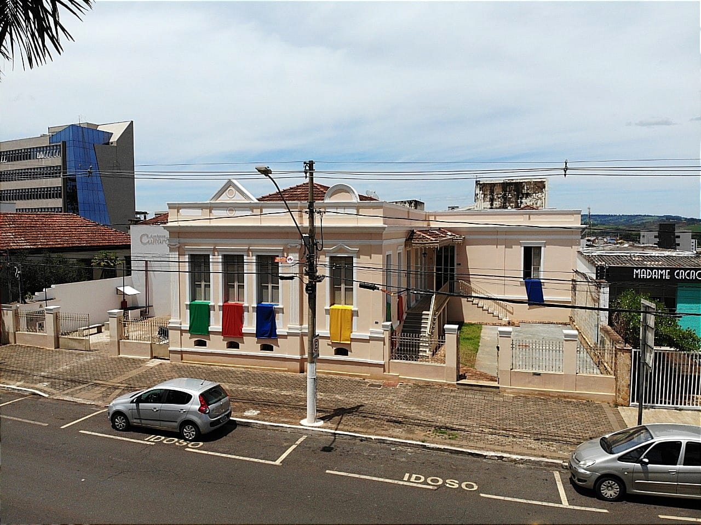

Prefeitura de Patos de Minas
Atrativos Turísticos
Lagoa Grande
Localiz ada ao lado do Terminal Rodoviário José Rangel, a Lagoa Grande foi urbanizada em meados de 1980, quando recebeu essa denominação. O local é um dos principais pontos turísticos de Patos de Minas e chama atenção pela sua beleza, abrigando diferentes espécies da fauna e da flora. Equipada com parquinho infantil, academia ao ar livre, pista de caminhada (extensão de 1,089 metros), atrai centenas de visitantes por dia.

Atrativos Turísticos
Parque do Mocambo
Horto florestal com cerca de 18 hectares, é uma das principais áreas públicas para recreação e prática esportiva na cidade. Conta com parquinho infantil, pedalinhos, academia ao ar livre, restaurante e muitos atrativos naturais. Horário de funcionamento: segunda a sexta-feira das 6h às 21h/ sábado, domingo e feriados das 6h às 19h. Endereço: R. Cristino Vida, s/n. Jardim Paraíso.
.jpeg)
Atrativos Turísticos
MuP
O Museu da Cidade de Patos de Minas integra o Sistema Brasileiro de Museus (Ibram), bem como o Sistema Estadual de Museus (SEM-MG). O espaço, montado na antiga casa de Olegário Maciel, foi criado em 2004 diante da necessidade de organizar o acervo cultural do município.
Catedral de Santo Antônio de Pádua
Patrimônio histórico e cultural do município, está localizada na Avenida Getúlio Vargas, Centro. Templo católico, preserva belo altar de valor inestimável para a cidade. É sede episcopal da Diocese de Patos de Minas.